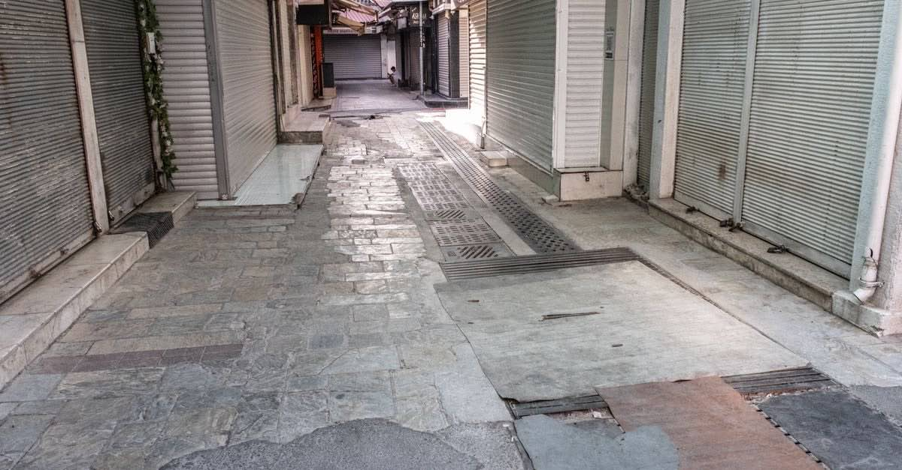

Deprem işi durdurunca: yarım ücret, haklı fesih ve kısa çalışma
Deprem zorlayıcı sebeptir. İş bir haftadan fazla durursa hem işçinin hem işverenin derhal fesih hakkı doğar; duran bir haftaya kadarki süre için işveren yarım ücret öder.

Bir hafta — zorlayıcı sebeple çalışılamayan bir haftaya kadar olan süre için işveren yarım ücret öder. Bir haftadan fazla süren durma, iki tarafa da derhal fesih hakkı verir.
Deprem sonrasında en sessiz kayıp iş ilişkisinde yaşanıyor: iş yeri kapanıyor, ücret ödenmiyor, kimse kimseye ne yapacağını söylemiyor. Oysa İş Kanunu bu durumu adıyla tanımlar. Deprem, zorlayıcı sebeptir ve zorlayıcı sebebin sonuçları kanunda yazılıdır.
Belirleyici eşik tek bir sayıdır: bir hafta.
Bir haftaya kadar: yarım ücret
Zorlayıcı sebeplerle iş yerinde çalışılamayan bir haftaya kadar olan süre için işveren işçiye yarım ücret öder. Bu, işverenin lütfu değil kanuni yükümlülüğüdür ve işçi çalışmasa da doğar.
Ulaşımın kesilmesi, iş yerinin hasar görmesi, bölgeye giriş çıkışın kısıtlanması gibi hâller zorlayıcı sebep sayılabilir. Önemli olan, işin durmasının işçiden ve işverenden kaynaklanmayan bir nedene dayanmasıdır.
Bir haftadan sonra: iki taraf da feshedebilir
Bir haftalık süre dolduğunda tablo değişir. Aynı olay hem işçiye hem işverene derhal fesih hakkı verir:
| Kim | Hangi durumda | Dayanak |
|---|---|---|
| İşçi | İşyerinde bir haftadan fazla süre işin durmasını gerektiren zorlayıcı sebep | m.24/III |
| İşveren | İşçiyi bir haftadan fazla süreyle çalışmaktan alıkoyan zorlayıcı sebep | m.25/III |
İstifa ile haklı fesih aynı şey değildir
Deprem sonrasında en sık yapılan hata, işten ayrılırken "istifa ediyorum" yazmaktır. İstifa, kıdem tazminatı bakımından farklı sonuç doğurur. Haklı nedene dayanıyorsanız dilekçenizde sebebini açıkça yazın: işin ne zamandan beri durduğunu, iş yerinin durumunu ve hangi maddeye dayandığınızı belirtin.
Kısa çalışma ödeneği
Zorlayıcı sebeple faaliyet tamamen veya kısmen durduğunda ya da haftalık çalışma süreleri önemli ölçüde azaldığında kısa çalışma ödeneği gündeme gelir. Ödenek İŞKUR tarafından ödenir.
Bilinmesi gereken pratik ayrıntı: başvuruyu işçi yapamaz. Bildirimi işveren yapar, İŞKUR uygunluk tespiti yapar, ödeme işçinin hesabına geçer. İşvereniniz başvurmuyorsa bu durumu İŞKUR'a bildirebilirsiniz.
İşçi tarafında ne yapmalı?
- İşin ne zaman durduğunu belgeleyin. Mesaj, e-posta, kapı ilanı, tanık — tarihi gösteren her şey.
- Ücret ödemelerini takip edin. Bir haftalık yarım ücretin ödenip ödenmediğini banka kaydından görün.
- Yazılı iletişim kurun. Sözlü "şimdilik gelme" ifadesi sonradan ispatlanamaz.
- Fesih bildirimini yazılı isteyin. İşveren feshediyorsa gerekçesini yazılı olarak talep edin.
- Süreleri kaçırmayın. İş sözleşmesinden doğan alacaklar için dava açmadan önce zorunlu arabuluculuk uygulanır.
İş yeriniz varsa: hasar ayrı bir hak kümesidir
İş yeri hasarı, konut hasarından ayrı bir alandır ve neredeyse hiç anlatılmaz. Burada iki şeyi kesin olarak ayırmak gerekir.
Kalıcı olan: Deprem, Vergi Usul Kanunu bakımından mücbir sebeptir; mücbir sebep süresince vergi ödevlerine ilişkin süreler işlemez. Beyan ve ödeme yükümlülükleri bu kapsamda ertelenir; SGK prim yükümlülükleri için de erteleme düzenlemeleri gündeme gelir. Ayrıntısı: deprem sonrası vergi ve emlak vergisi.
Geçmiş uygulama — hak değil, emsal
2023 depremlerinden sonra KOSGEB eliyle borç silme, acil destek kredisi, geri ödemesiz konteyner ve onarım destekleri uygulanmıştır. Bunlar afete özgü program kararlarıydı, kalıcı mevzuat değil. Yeni bir afette aynı destekler aynı tutarlarla tekrarlanmayabilir. Bu sayfada tutar yazmıyoruz; çünkü tutar yazmak, olmayan bir hakkı varmış gibi göstermek olur.
Ticari deprem sigortası ayrıdır. Zorunlu deprem sigortası, tamamı ticari veya sınai amaçla kullanılan binaları kapsamaz; ayrıca iş yeri sahibinin asıl kaybı olan iş durması ve kâr kaybı hiçbir hâlde DASK teminatı içinde değildir. Kapsamın sınırı için: DASK neyi karşılar, neyi karşılamaz?
Kiracı işletmeci ve ev işçisi
İki grup sistematik olarak gözden kaçar:
- Kiracı işletmeci: Dükkânı kiralayan esnaf, bina hasarında DASK tazminatının tarafı değildir;
tazminat malike ödenir. Kendi eşya ve emtia zararı için ayrı poliçe gerekir.
- Ev hizmetlerinde çalışanlar: Sigortalılığı 4857 dışında düzenlenen çalışanların hak arama
yolları farklıdır; bir haftalık yarım ücret kuralı bu gruplar için doğrudan uygulanmayabilir.
Her iki durumda da barodan ücretsiz danışma alınması, tek başına karar vermekten iyidir.
Kanuni dayanak
| Mevzuat | Ne diyor |
|---|---|
| 4857 sayılı İş Kanunu m.24/III | İşyerinde bir haftadan fazla süre işin durmasını gerektiren zorlayıcı sebepler, işçiye haklı nedenle derhal fesih hakkı verir. |
| 4857 sayılı İş Kanunu m.25/III | İşçiyi işyerinde bir haftadan fazla süreyle çalışmaktan alıkoyan zorlayıcı sebep, işverene haklı nedenle derhal fesih hakkı verir. |
| 4857 sayılı İş Kanunu m.40 | Zorlayıcı sebeplerle çalışılamayan bir haftaya kadar olan süre için işveren işçiye yarım ücret öder. |
| 4447 sayılı Kanun ek m.2 | Zorlayıcı sebeple faaliyetin tamamen veya kısmen durması hâlinde kısa çalışma ödeneğini düzenler. |
| 213 sayılı Vergi Usul Kanunu m.13 ve m.15 | Deprem mücbir sebeptir; mücbir sebep süresince vergi ödevlerine ilişkin süreler işlemez. |
Sık sorulanlar
Deprem nedeniyle iş yerine gidemedim; ücretim ödenir mi?
Zorlayıcı sebeplerle çalışılamayan bir haftaya kadar olan süre için işverenin yarım ücret ödemesi gerektiği belirtilmektedir. Bir haftadan sonrası için ücret yükümlülüğü kural olarak sona erer; devreye kısa çalışma ödeneği veya fesih hakkı girer.
İşveren 'deprem oldu' diyerek beni işten çıkarabilir mi?
İşçiyi işyerinde bir haftadan fazla süreyle çalışmaktan alıkoyan zorlayıcı bir sebep varsa işverenin de derhal fesih hakkı doğar. Ancak bu, kıdem tazminatı hakkını kendiliğinden ortadan kaldırmaz; zorlayıcı sebeple fesihte kıdem tazminatı gündeme gelebilir. Fesih bildiriminin gerekçesini yazılı isteyin ve saklayın.
İşi bırakırsam haklarımı kaybeder miyim?
İstifa ile haklı nedenle fesih aynı şey değildir. İş bir haftadan fazla durmuşsa işçinin haklı nedenle derhal fesih hakkı vardır ve bu, kıdem tazminatı bakımından istifadan farklı sonuç doğurur. Dilekçenizde 'istifa ediyorum' yerine hangi haklı sebebe dayandığınızı yazın.
Kısa çalışma ödeneğine kim başvurur?
Başvuruyu işçi değil işveren yapar; İŞKUR'a bildirim yapılır ve uygunluk tespiti sonrası ödeme işçinin hesabına yatar. İşvereniniz başvurmuyorsa İŞKUR'a durumu bildirebilirsiniz.
İş yerim hasar gördü; esnaf olarak hangi destekler var?
Kalıcı hak olarak sayabileceğimiz şey vergi mücbir sebebi ve SGK prim ertelemesidir. 2023'te uygulanan KOSGEB kredileri, konteyner ve onarım destekleri ise afete özgü program kararlarıydı; yeni bir afette aynen tekrarlanacağının garantisi yoktur.
Bu konuyla ilgili araç
Hak taramaÜç soruyla profilinize uyan hakları listeleyin.Süre takvimiFesih, başvuru ve itiraz sürelerinizi takvime dökün.İlgili rehberler
 Vergi, prim ve borçlar
Deprem sonrası vergi: mücbir sebep, terkin ve yıkılan binanın emlak vergisi
Deprem mücbir sebep hâlidir ve süreler işlemez. Yıkılan bina için emlak vergisi mükellefiyeti ise çoğu zaman bildirime bağlı olarak sona erer.
Vergi, prim ve borçlar
Deprem sonrası vergi: mücbir sebep, terkin ve yıkılan binanın emlak vergisi
Deprem mücbir sebep hâlidir ve süreler işlemez. Yıkılan bina için emlak vergisi mükellefiyeti ise çoğu zaman bildirime bağlı olarak sona erer.
 Kira ve mülkiyet
Kiracının deprem hakları: tazminat davası için tapu sahibi olmanız gerekmez
DASK malike öder, hak sahipliği tapu arar, afet konutu malike verilir. Ama tazminat davasında mülkiyet şartı yoktur — kiracının en güçlü hakkı budur.
Kira ve mülkiyet
Kiracının deprem hakları: tazminat davası için tapu sahibi olmanız gerekmez
DASK malike öder, hak sahipliği tapu arar, afet konutu malike verilir. Ama tazminat davasında mülkiyet şartı yoktur — kiracının en güçlü hakkı budur.
 Hasar tespiti ve itiraz
Depremden sonra ilk 30 gün: hangi hakkın süresi ne zaman doluyor?
Deprem sonrasında kaybedilen hakların çoğu bilinmediği için değil, süresi kaçtığı için kaybediliyor. İşte gün gün yapılması gerekenler.
Hasar tespiti ve itiraz
Depremden sonra ilk 30 gün: hangi hakkın süresi ne zaman doluyor?
Deprem sonrasında kaybedilen hakların çoğu bilinmediği için değil, süresi kaçtığı için kaybediliyor. İşte gün gün yapılması gerekenler.